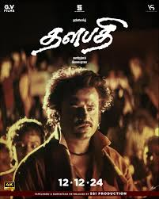

SPOTSTAR - MANI RATNAM
Mani Ratnam, born on June 2, 1956, is one of India’s most acclaimed and influential film directors, known for his exceptional storytelling and visual brilliance. He made his directorial debut with the Kannada film Pallavi Anu Pallavi but gained widespread recognition with Tamil films like Mouna Ragam and Nayakan. His films often explore complex human emotions, social issues, and political themes, told with artistic finesse and technical excellence. Nayakan, inspired by real-life events, is considered one of the greatest Indian films of all time. Mani Ratnam has directed several critically acclaimed and commercially successful films such as Roja, Bombay, Iruvar, Alaipayuthey, and Guru. His work is known for blending strong narratives with memorable music, often in collaboration with composer A R Rahman. He has received numerous national and international awards and has been instrumental in bringing global attention to Tamil cinema. Mani Ratnam's unique style combines realism with poetic storytelling, and his characters often reflect the complexities of modern life. He continues to inspire generations of filmmakers with his passion for cinema, making him a true pioneer and legend in Indian filmmaking.
POPULAR FILMS

